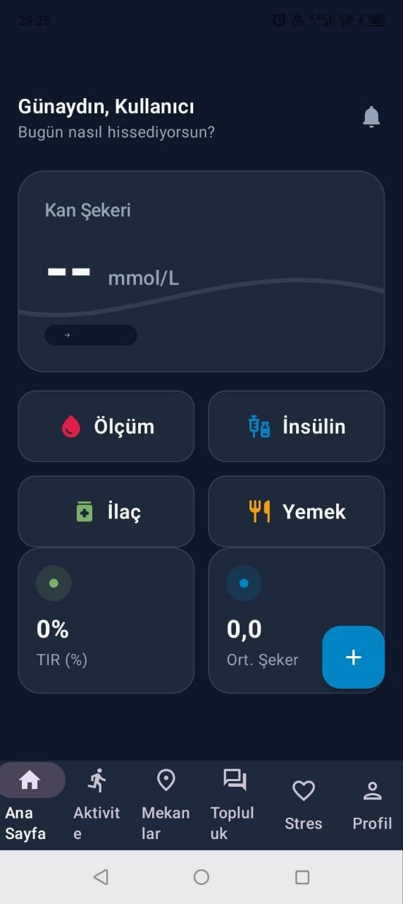
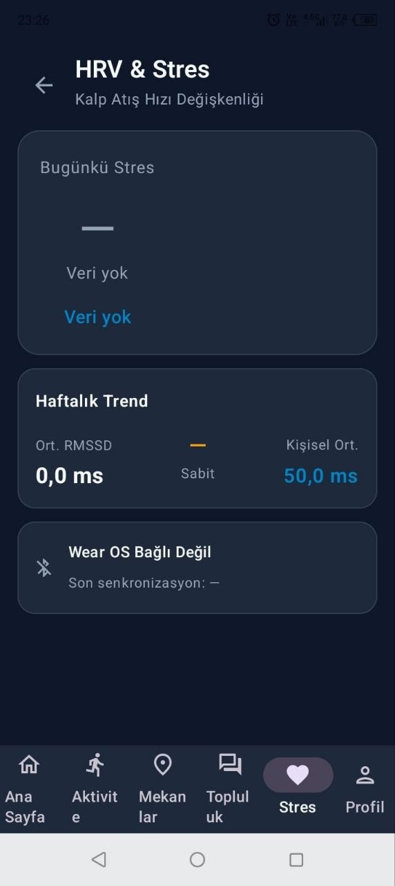
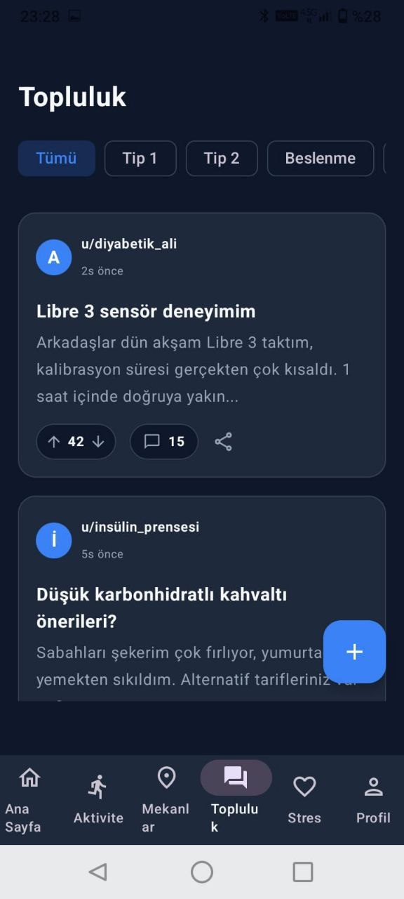

DiyaLife Dijital Sağlık Ekosistemi
DiyaLife; Tip 1 diyabetli gençlerin fiziksel, zihinsel ve sosyal sağlığını bütüncül bir perspektifle ele alan, teknoloji destekli ve akran öğrenimine dayalı yenilikçi bir diyabet yönetim ekosistemidir.



Fiziksel sağlık, zihinsel destek ve sosyal bağlantı — her boyut tek bir çatı altında, birbirini tamamlayan modüller halinde tasarlandı.
Türkiye Endokrinoloji ve Metabolizma Derneği'nin klinik kılavuzu temel alınarak geliştirilen RAG mimarisine dayalı DiyaAsistan, her soruyu kaynak gösterimiyle yanıtlar. Tanı koymaz — yol gösterir.
Kanıta dayalı, kaynak atıflı yanıtlar
Acil semptomlarda HypoGuard ile entegre çalışır
Kılavuz güncellemelerinde otomatik bilgi tabanı revizyonu
Sen sordun:
"Egzersiz öncesi insülin dozumu nasıl ayarlamalıyım?"
DiyaAsistan:
Egzersiz süresi ve yoğunluğuna göre bazal insülini %20–50 azaltmanız önerilebilir. Orta yoğunluklu aktivite öncesi kan şekeriniz 120 mg/dL'nin üzerindeyse ek karbonhidrat gerekmeyebilir...
DiyaLife'ın başarısı soyut değil — HbA1c değerinden okul devamsızlığına, psikolojik iyilik puanından kullanıcı memnuniyetine kadar her gösterge net hedeflerle tanımlanmıştır.
DiyaLife'ı sıradan bir sağlık uygulamasından ayıran beş temel tasarım ilkesi.
"Diyabet beni tanımlamaz;
ben diyabeti yönetirim."